library('tidyverse')
library('forecast')
library('gridExtra')
library('data.table')(수업) 시계열 자료분석 실습 4
ACF, PACF, WN
정상 시계열 생성
z <- rnorm(200)tmp.data <- data.frame(
t = 1:length(z),
z = z
)ggplot(tmp.data, aes(t, z)) +
geom_line(col = 'steelblue') +
xlab("") + ylab("") +
geom_hline(yintercept = 0, lty = 2, col = 'grey') +
theme_bw()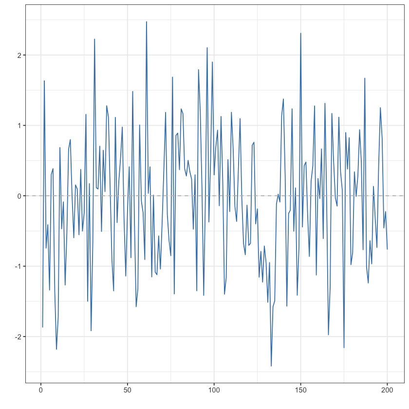
- 추세가 없고 분산이 일정한 시계열(정상 시계열)이 나옴.
다만 시도표만 보아서는 이게 확실한 정상 시계열인가가 판별 불가
list description for MA(1) model
- 결국
\(z_t\) = \(\mu + e_t\) - \(\theta\)*\(e_{t-1}\)
그리고
\(e_t\) ~ \(wn(0, \sigma^2)\)
ma1_sim <- function(mu, theta, sigma, n){
z <- rep(0, n*2)
e <- rnorm(n*2, 0, sigma^2)
z[1] <- mu + e[1] # 첫 번째는 손으로 입력
for(k in 2:(n*2)){
z[k] <- mu + e[k] - theta*e[k-1]
}
return(z[-(1:n)]) # 우리는 100개만 생성하고 싶었으므로 200개 만든 것중 뒤에 거 100개만 선택
}tmp.data <- data.frame(
t = 1:100,
z1 = ma1_sim(10, 0.7, 2, 100),
z2 = ma1_sim(10, 0.3, 2, 100),
z3 = ma1_sim(10, -0.3, 2, 100),
z4 = ma1_sim(10, -0.7, 2, 100)
)tmp.data %>% head| t | z1 | z2 | z3 | z4 | |
|---|---|---|---|---|---|
| <int> | <dbl> | <dbl> | <dbl> | <dbl> | |
| 1 | 1 | 15.973064 | -0.2144137 | 4.004808 | 1.559836 |
| 2 | 2 | 6.404642 | 11.5828872 | 10.782340 | 1.866126 |
| 3 | 3 | 8.451455 | 11.9842862 | 12.988449 | 12.938498 |
| 4 | 4 | 15.287295 | 6.0724006 | 13.235363 | 14.149592 |
| 5 | 5 | 12.024007 | 15.9900225 | 8.699641 | 15.053175 |
| 6 | 6 | 9.813083 | 12.8475078 | 13.403414 | 10.649353 |
theta <- c(0.7, 0.3, -0.3, -0.7)
for(k in 1:4){
plot(tmp.data$t, tmp.data[, (k+1)], type = 'l',
col = 'steelblue',
main = paste0(' theta = ', theta[k]),
xlab = 't',
ylab = 'z')
abline(h = 10, col = 'grey', lty = 2)
}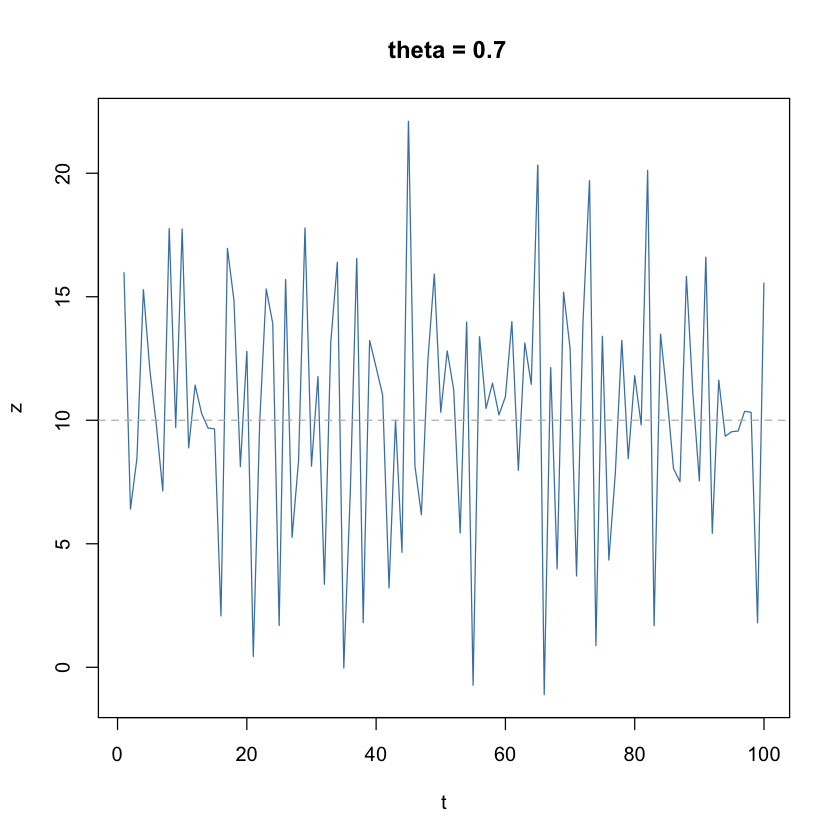
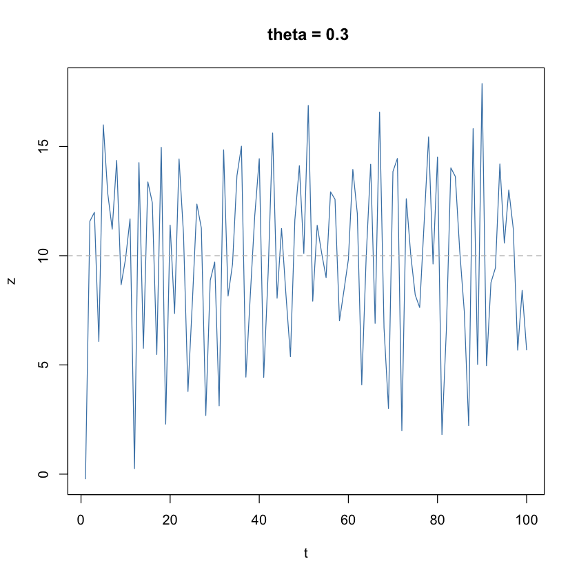
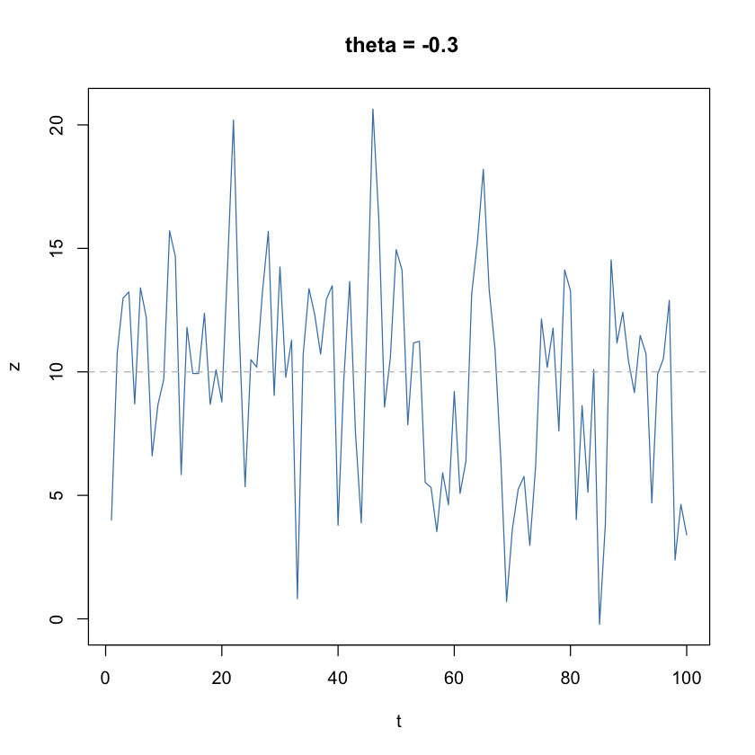
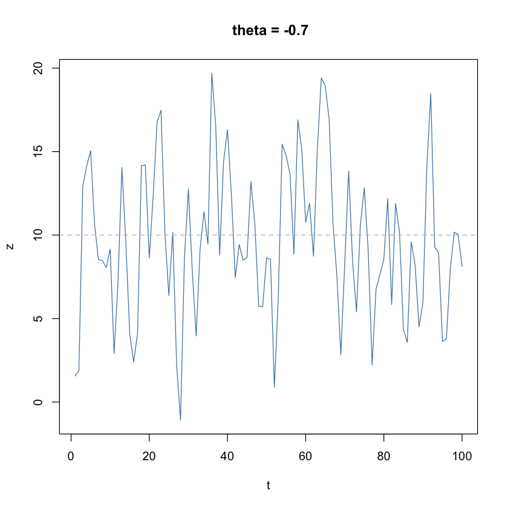
- 분산이 다름.
0.3이 덜 왔다갔다함. 0.7이 더 큼.
3번째는 덜 함. 2번째보다 4번째는 3번째보다도 덜 함.
TimeSeriesModel만 보아서는 이게 \(ma(1)\)모델인지 알아 볼 수 없음.
ACF
for(k in 1:4){
acf(tmp.data[, (k+1)],
main = paste0(' theta = ', theta[k]))
}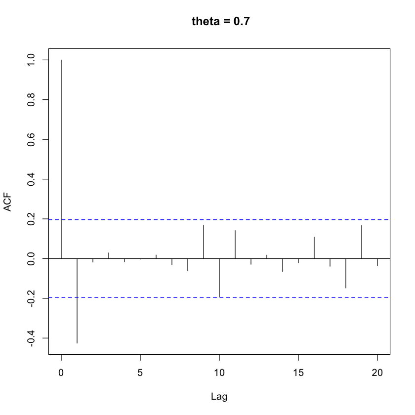
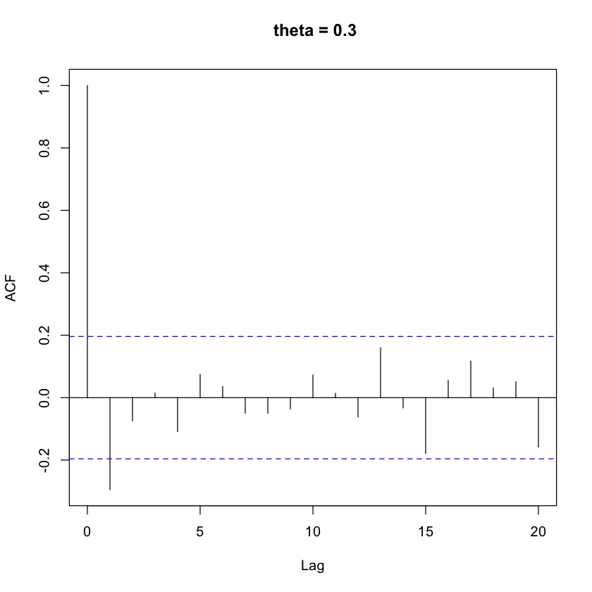
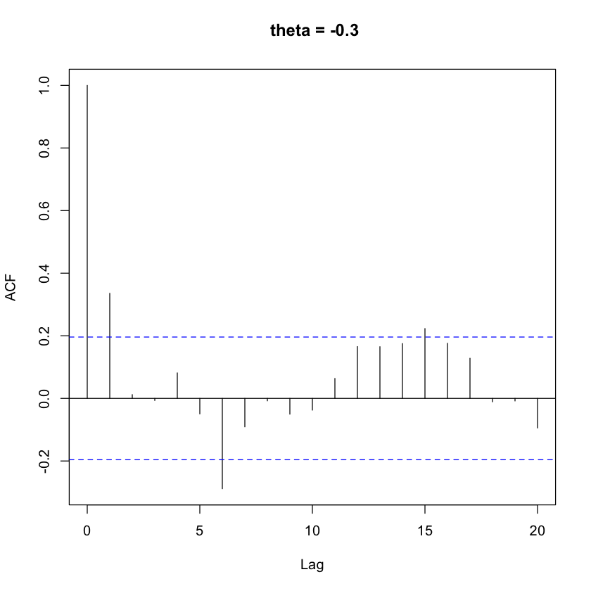
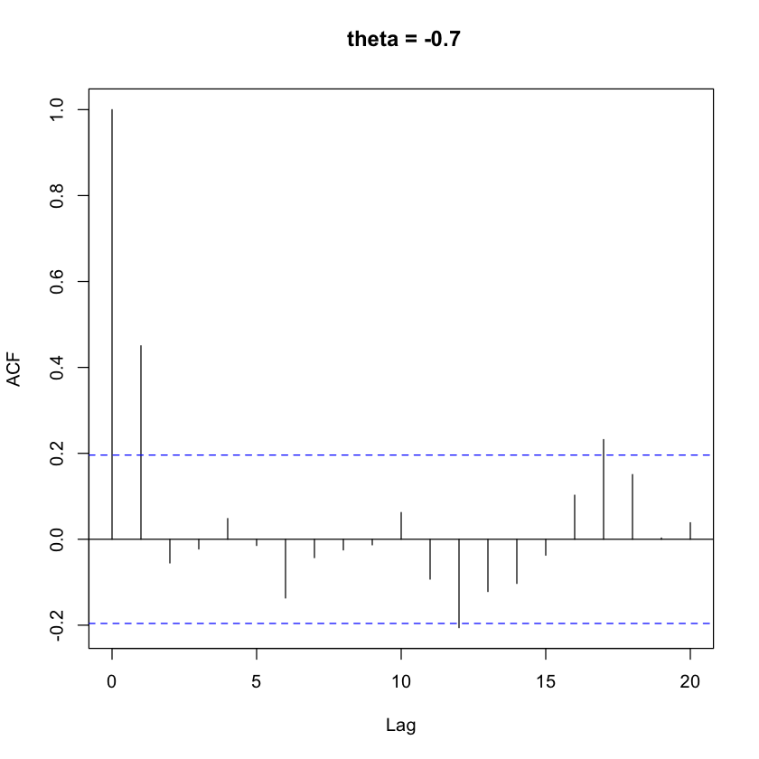
해석 : 일단, ACF에서 첫번째 시차가 0인 경우는 무조건 ACF가 1임.
그래서 첫 번째 값을 보면 \(\theta\) = 0.7, 0.3일 때 ACF = 0.5, -0.4정도 나오는데 작아지는 모습을 보임.
\(\theta\) = 0.7, -0.7인 경우를 비교하면 전자는 acf의 첫번째 시차의 acf가 음수인데, 후자의 경우 양수가 나옴.
이유는 corr이 음수면 방향이 계속 바뀔려고 하고 corr이 양수면 같은 부호에서 머물려고함.
\(\theta\)의 절댓값에 커짐에 따라 변동폭이 커짐.파란선은 귀무가설을 기각하기 위한 임계치선
0.2에 선이 그어진 이유가 \(H_0\) : \(\rho\) = 0의 기각역이 \(2/\sqrt{n}\) 에서 n = 100이여서(2는 사실 엄밀히 1.96)
간혹 삐쭉삐쭉 나온 것들 있는데 그정도는 무시
즉, 정리하면 파란선 안쪽은 다 0이다.
첫 번째 시차만 살아남고(=\(\rho_1\)) 나머지는 다 0
이러한 ACF의 형태까지 보면 우리는 이거 MA모형인가 식별가능
PACF
for(k in 1:4){
pacf(tmp.data[, (k+1)],
main = paste0(' theta = ', theta[k]))
}
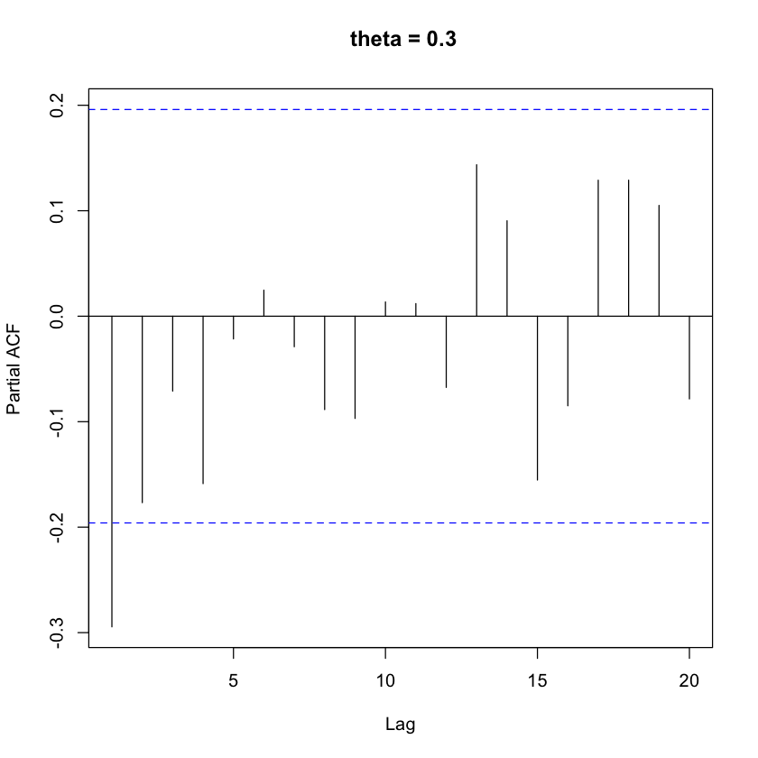
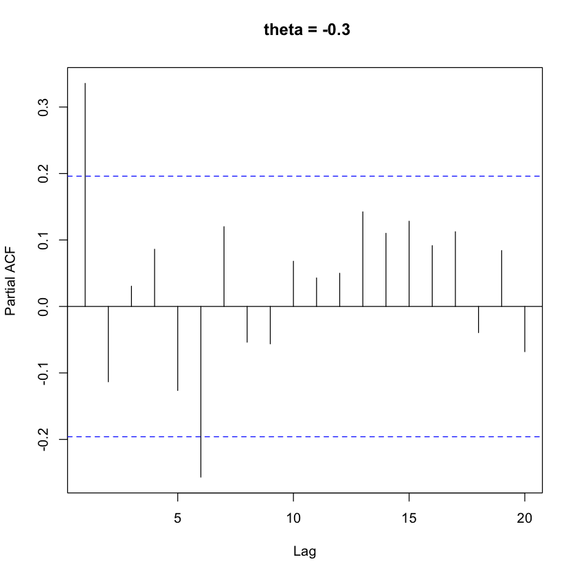
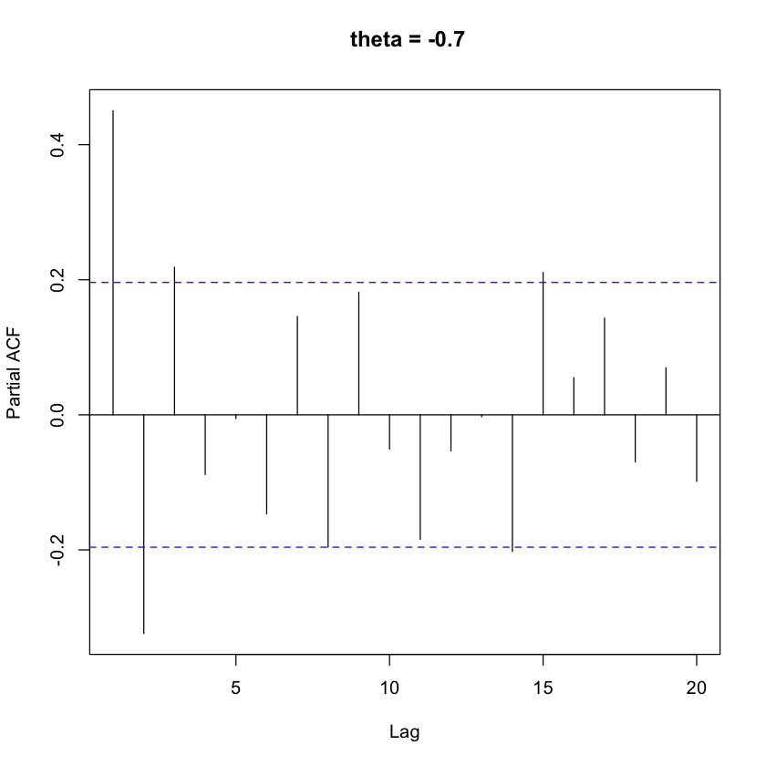
- 해석 : 맨 처음 값들은 \(\rho_1\)들이고 이는 \(\phi_{11}\) 이다.
두 번째 \(\theta\) = 0.3인 경우를 보면 \(\theta\)가 작아서 그런지 유의하지 않게 나옴.
ACF같은 경우 첫 번째 시차만 살아남고 나머지 다 0이고
PACF의 경우 살아남은 것들이 좀 더 있지만 부호가 바뀌면서(sin곡선을 그리며) 감소하는 추세를 보임.
그래서 우리는 ACF, PACF를 그려보고 MA모형인지 AR모형인지 등등 알아내면 된다.
iid 정규분포 (백색잡음)
z <- rnorm(100)
tmp.data <- data.table(
t = 1:length(z),
z = z
)- 예쁘게 그리기
ggplot에서 ACF쓸려면 ggAcf사용하면된다.
PACF사용하려면 ggPacf사용하면 됨.
p1 <- ggplot(tmp.data, aes(t, z)) +
geom_line(col = 'steelblue', lwd = 1) +
xlab("") + ylab("") +
ggtitle('Time series plot of iid N(0,1)') +
geom_hline(yintercept = 0, lty = 2, col = 'grey') +
theme_bw()
p2 <- ggAcf(z) +
theme_bw() + ylim(-1, 1) +
theme(plot.title = element_blank())
p3 <- ggPacf(z) +
theme_bw() + ylim(-1, 1) +
theme(plot.title = element_blank())grid.arrange(p1, p2, p3, nrow = 2,
layout_matrix = rbind(c(1, 1),
c(2, 3)))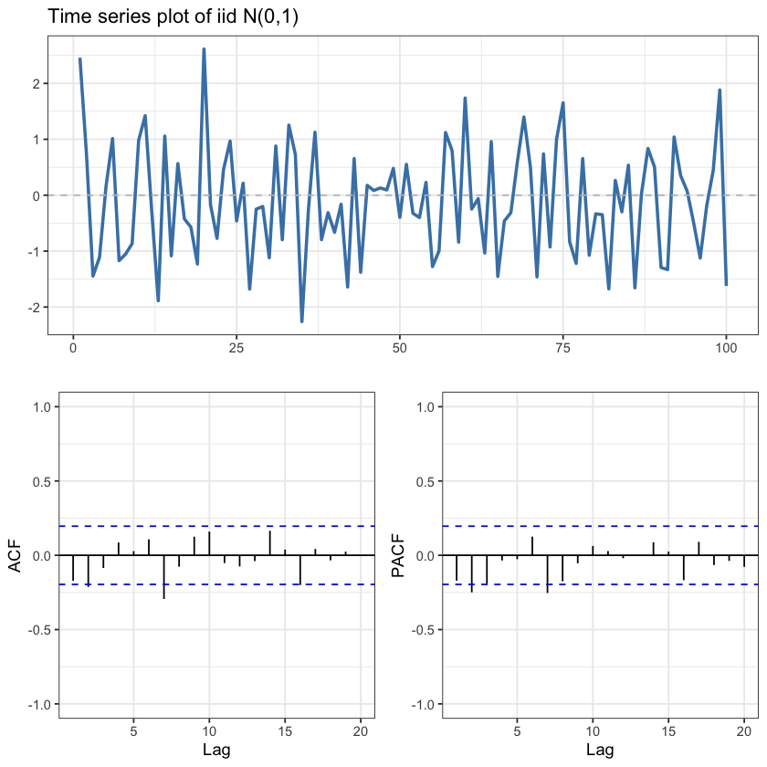
p1
p2
p3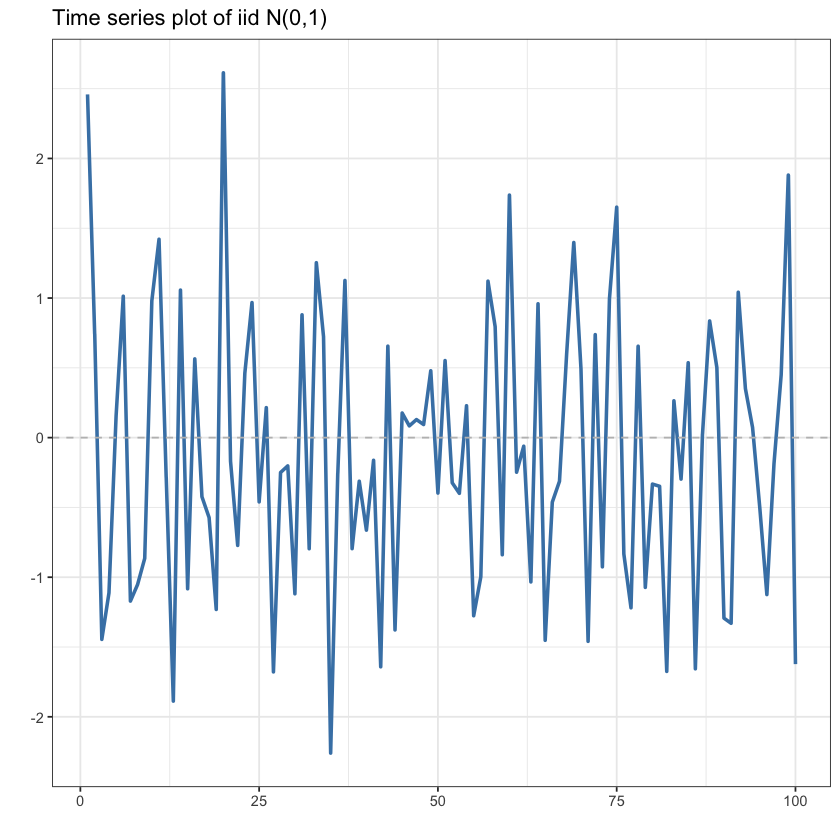
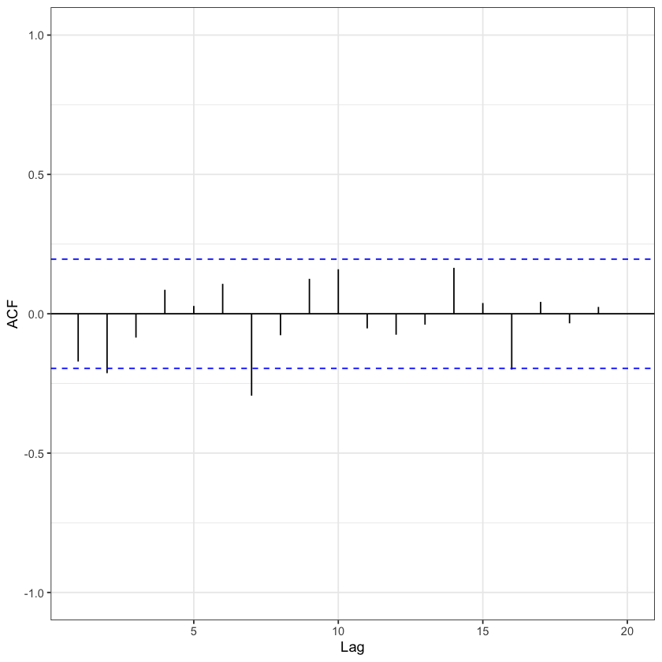
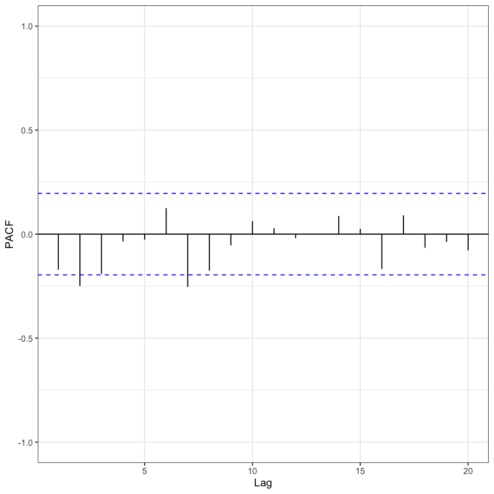
- wn이기에 \(\rho\)들은 거의 다 0이여야한다.
실제로 보면 전부다 0에 가까운 숫자들임.
나중에 잔차 검증할 때에도 사용
layout(matrix(c(1, 1, 2, 3), 2, 2, byrow = TRUE))
plot(z~t, tmp.data, type = 'l',
col = 'steelblue',
main = paste0(' iid N(0,1)'),
xlab = 't',
ylab = 'z')
abline(h = 0, col = 'grey', lty = 2)
acf(z)
pacf(z)
graphics.off()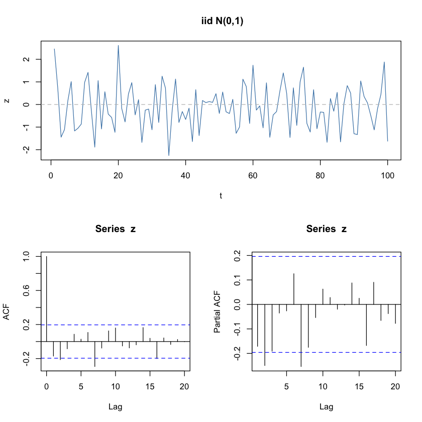
acf(z)
pacf(z)
graphics.off()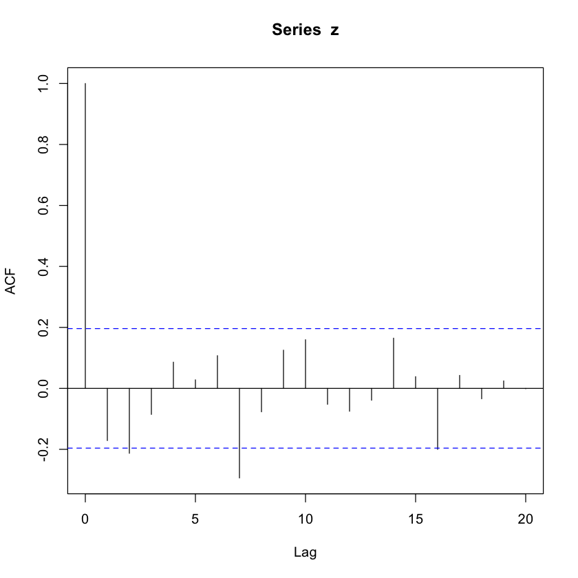
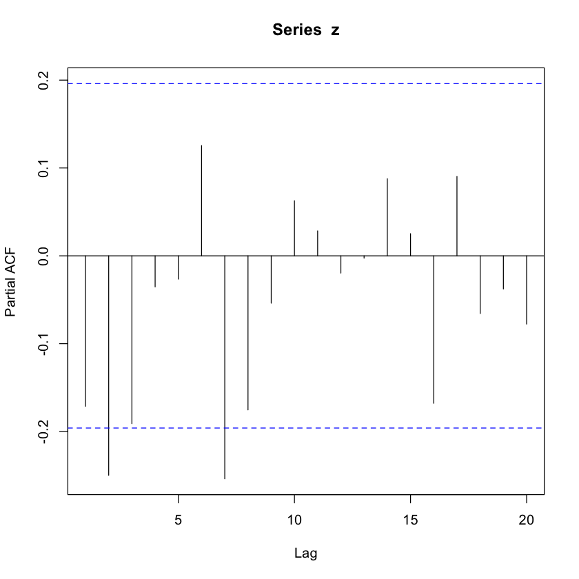
여러가지 데이터에 대한 ACF PACF 그림
sin
- 추세법이나 분해법 사용시 sin함수 사용한 것처럼, 위에서 시작해서 위까지 즉, 밑에 보면 주기가 6인 사인함수
t <- 1:100
y <- sin(t*pi/3)
plot(z[1:30], type = 'o', ylab = '', xlab = '')layout(matrix(c(1, 1, 2, 3), 2, 2, byrow = TRUE))
plot(t, y, type = 'l',
col = 'steelblue',
xlab = 't',
ylab = 'z')
abline(h = 0, col = 'grey', lty = 2)
acf(z)
pacf(z)
graphics.off()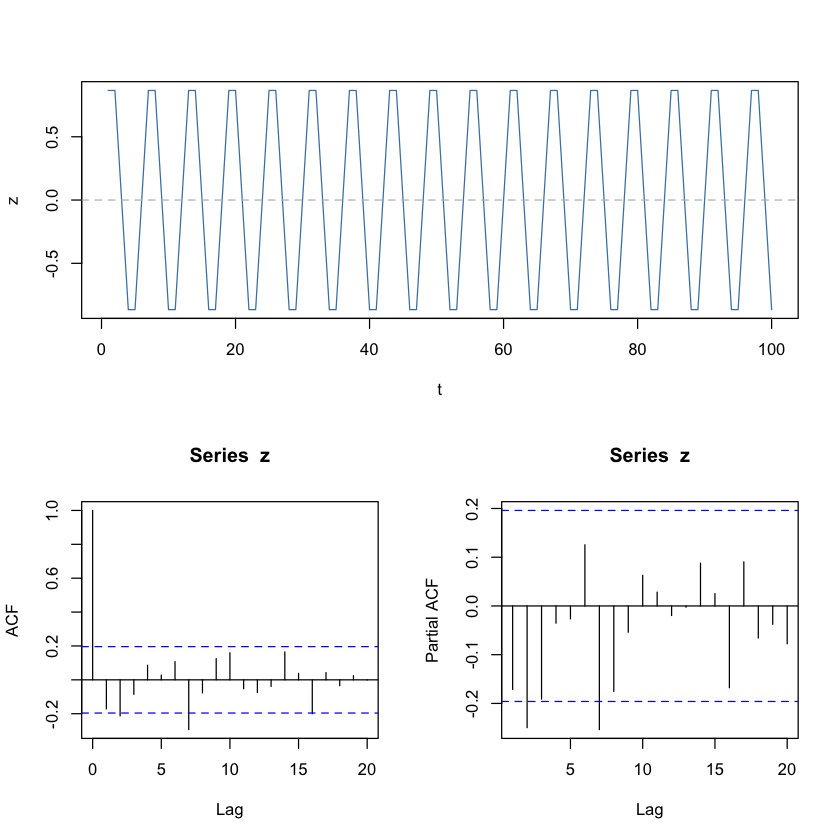
acf(z)
pacf(z)해석 : ACF보면 주기가 6인 사인함수이기에 6마다 corr이 1인 모습을 볼 수 있음.
그리고 3칸가면 무조건 부호 바뀜. 따라서 위의 ACF그림 같은 경우는 3, 9.. 마다 -인 것을 볼 수 있음.
PACF보면 6넘어가는 시점부터는 거의 다 0임. 이게 주기가 6이다 보니 6정도 지나면 PACF라는 것이 딱 두 개만의 관계를 설명하고 나머지를 배제하는 것이기에 이미 한 바퀴 돈 시점부터 이전까지의 process는 설명이 끝남. 이후는 같은 내용 반복이므로 설명할 내용이 없기에 PACF = 0에 가까이 나옴.추세가 있는 경우도 마찬가지.
앞의 것들이 이미 설명함.
비행기 메모 추가
36p 비행기 그림보면
선형성 강하게 나오는 것들 있는데 1, 12완전 직선 느낌 등등 -> 계절성이 있구나
4, 5는 별 거 없다 -> 연관 별로 없구나